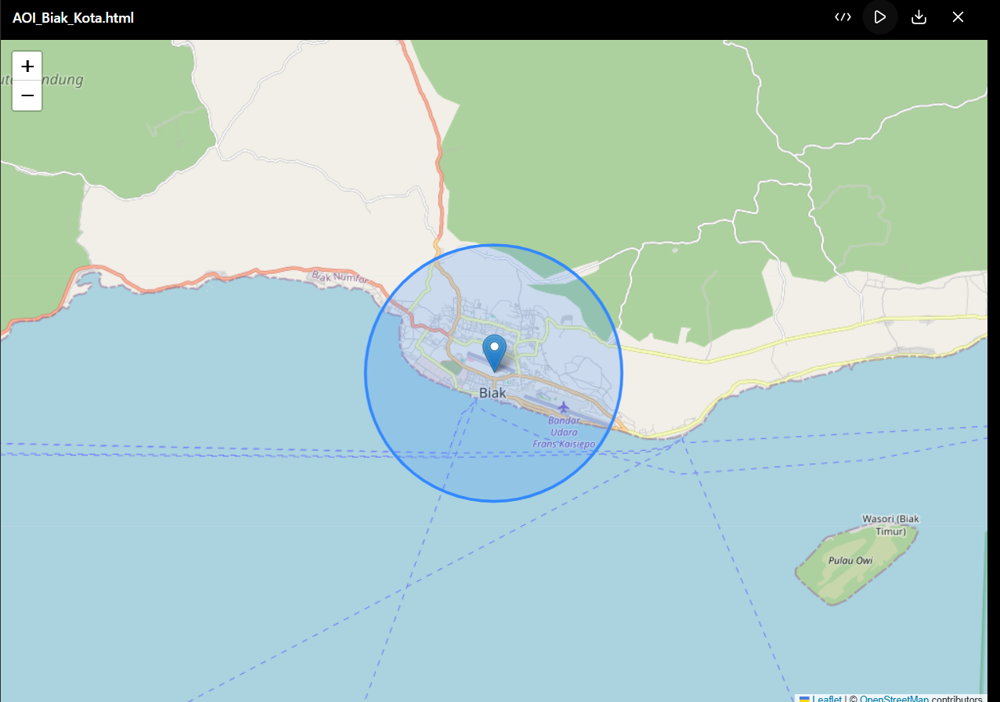
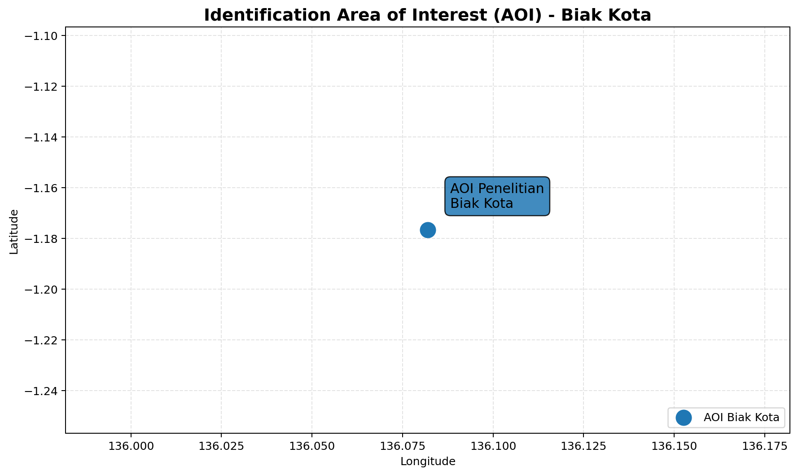
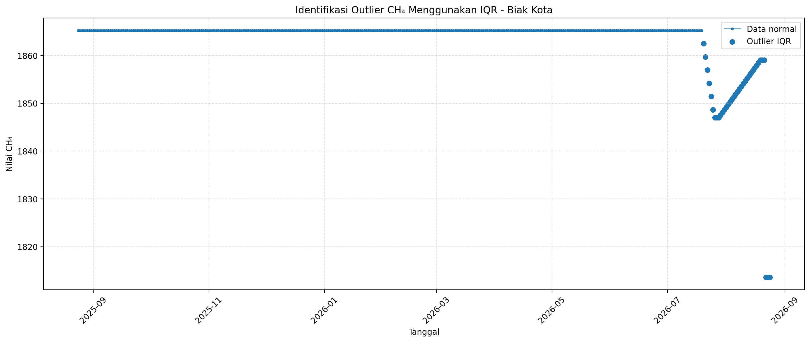
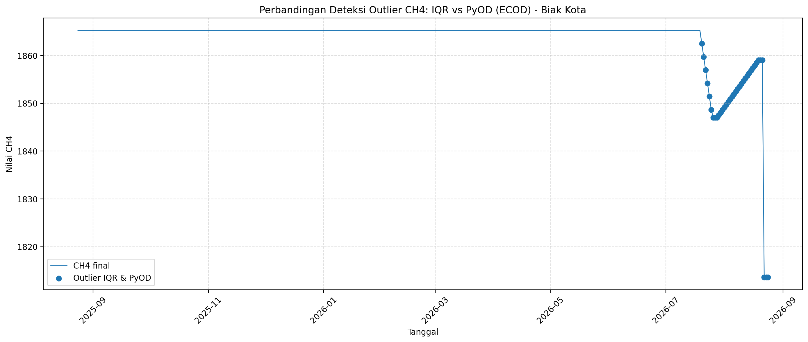
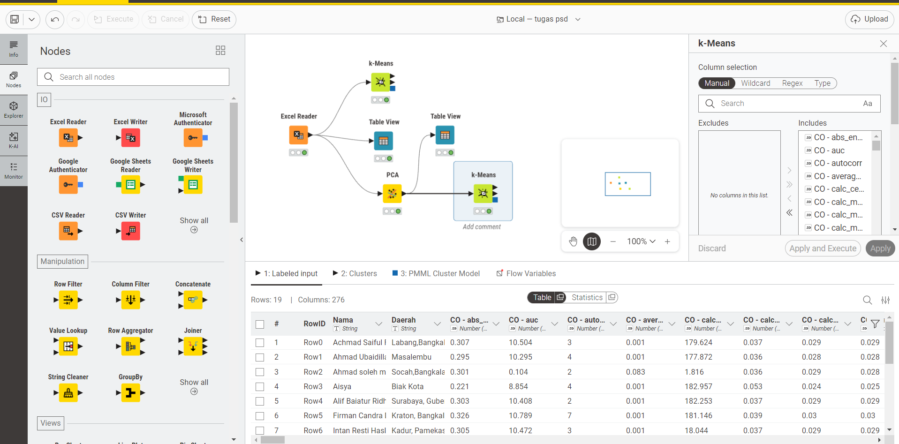

1. Identification Area of Interest (AOI)#
1.1 Tujuan#
Identification Area of Interest (AOI) merupakan tahap untuk menentukan wilayah geografis yang menjadi lokasi penelitian. Pada tahap ini, lokasi penelitian divisualisasikan dalam bentuk peta sehingga wilayah yang digunakan dalam proses analisis dapat diketahui dengan jelas.
Berdasarkan data penelitian yang digunakan, wilayah yang menjadi lokasi penelitian adalah Biak Kota.
Visualisasi AOI dilakukan menggunakan Python dan library Folium dengan menggunakan peta dasar OpenStreetMap.
1.2 Data yang Digunakan#
Data yang digunakan pada tahap identification AOI berasal dari data penelitian yang memiliki informasi wilayah atau daerah pengambilan data.
Informasi lokasi yang digunakan adalah:
Informasi |
Nilai |
|---|---|
Wilayah Penelitian |
Biak Kota |
Latitude Referensi |
-1.1767 |
Longitude Referensi |
136.0820 |
Library |
Folium |
Basemap |
OpenStreetMap |
Catatan: Dataset TSFEL yang digunakan hanya menyimpan nama wilayah dan tidak menyimpan koordinat latitude dan longitude sensor. Oleh karena itu, koordinat yang digunakan merupakan koordinat referensi Biak Kota, bukan koordinat sensor asli.
1.3 Library yang Digunakan#
Library yang digunakan untuk membuat visualisasi peta adalah Folium.
Folium merupakan library Python yang digunakan untuk membuat peta interaktif berbasis Leaflet.
Install library Folium dengan perintah berikut:
!pip install folium
1.4 Pembuatan Peta AOI#
Kode berikut digunakan untuk membuat peta dan menampilkan lokasi Biak Kota sebagai Area of Interest (AOI).
import folium
# ==========================================
# IDENTIFICATION AREA OF INTEREST (AOI)
# BIAK KOTA
# ==========================================
# Koordinat referensi Biak Kota
latitude = -1.1767
longitude = 136.0820
# Membuat peta
m = folium.Map(
location=[latitude, longitude],
zoom_start=12,
tiles="OpenStreetMap"
)
# Menambahkan marker lokasi AOI
folium.Marker(
location=[latitude, longitude],
popup="AOI Penelitian: Biak Kota",
tooltip="Biak Kota"
).add_to(m)
# Menambahkan lingkaran sebagai visualisasi area AOI
folium.Circle(
location=[latitude, longitude],
radius=5000,
popup="Area AOI Biak Kota",
color="blue",
fill=True,
fill_opacity=0.2
).add_to(m)
# Menampilkan peta
m
1.5 Menyimpan Hasil Peta#
Peta yang telah dibuat dapat disimpan dalam bentuk file HTML agar dapat dibuka kembali melalui browser.
# Menyimpan peta
m.save("AOI_Biak_Kota.html")
print("Peta AOI Biak Kota berhasil dibuat.")
Hasilnya berupa file:
AOI_Biak_Kota.html
File tersebut dapat dibuka menggunakan browser untuk melihat peta interaktif.
1.6 Hasil Visualisasi AOI#
Hasil identification Area of Interest (AOI) divisualisasikan menggunakan dua bentuk visualisasi, yaitu peta interaktif menggunakan Folium dan grafik koordinat lokasi AOI.
1.6.1 Peta Interaktif Folium#

Gambar 1. Peta interaktif Area of Interest (AOI) Biak Kota menggunakan Folium.
Pada Gambar 1, marker menunjukkan lokasi referensi Biak Kota pada peta. Lingkaran berwarna biru digunakan untuk memberikan gambaran area sekitar titik AOI dengan radius 5 km.
Peta menggunakan OpenStreetMap sebagai basemap sehingga kondisi geografis di sekitar Biak Kota dapat terlihat dengan lebih jelas.
1.6.2 Visualisasi Koordinat AOI#

Gambar 2. Visualisasi koordinat Area of Interest (AOI) Biak Kota.
Pada Gambar 2, titik menunjukkan posisi koordinat referensi yang digunakan sebagai pusat AOI Biak Kota. Posisi titik berada pada:
Latitude: -1.1767
Longitude: 136.0820
Sumbu horizontal menunjukkan nilai longitude, sedangkan sumbu vertikal menunjukkan nilai latitude. Titik biru pada grafik menunjukkan lokasi referensi AOI penelitian.
Visualisasi ini digunakan sebagai pendukung untuk menunjukkan posisi koordinat AOI secara lebih sederhana dan terstruktur.
1.7 Interpretasi Hasil#
Berdasarkan kedua visualisasi tersebut, wilayah penelitian yang digunakan sebagai Area of Interest (AOI) adalah Biak Kota.
Peta Folium memberikan gambaran lokasi AOI berdasarkan kondisi geografis, sedangkan grafik koordinat menunjukkan posisi titik referensi berdasarkan nilai latitude dan longitude.
Dengan demikian, identification AOI telah menghasilkan lokasi yang dapat digunakan sebagai dasar untuk proses analisis data pada tahap berikutnya.
Catatan: Koordinat yang digunakan merupakan koordinat referensi Biak Kota karena dataset yang tersedia tidak memiliki koordinat sensor asli. Lingkaran 5 km pada peta merupakan visualisasi area dan bukan batas administratif resmi Biak Kota.
1.8 Kesimpulan#
Identification Area of Interest (AOI) telah dilakukan menggunakan library Folium dan visualisasi koordinat. Berdasarkan data penelitian, wilayah yang digunakan adalah Biak Kota dengan koordinat referensi latitude -1.1767 dan longitude 136.0820.
Peta interaktif dan grafik koordinat memberikan gambaran mengenai lokasi AOI yang digunakan dalam penelitian. Hasil identification ini selanjutnya digunakan sebagai dasar untuk melakukan analisis outlier pada data penelitian.
2. Identifikasi dan Pelaporan Outlier#
2.1 Identifikasi Outlier Menggunakan Metode IQR#
Pada tahap ini dilakukan identifikasi data pencilan (outlier) pada data konsentrasi CH₄ (Metana) di Biak Kota. Identifikasi outlier dilakukan menggunakan metode Interquartile Range (IQR).
Metode IQR digunakan untuk menentukan data yang berada di luar batas bawah dan batas atas berdasarkan kuartil pertama (Q1) dan kuartil ketiga (Q3).
Rumus yang digunakan adalah:
Kemudian batas bawah dan batas atas ditentukan dengan:
Data yang memiliki nilai di bawah batas bawah atau di atas batas atas dikategorikan sebagai outlier.
Pada dataset CH₄ Biak Kota, proses identifikasi outlier dilakukan berdasarkan kolom CH4_final, sedangkan hasil identifikasi ditandai pada kolom outlier_IQR.
2.2 Hasil Identifikasi Outlier#
Berdasarkan hasil identifikasi menggunakan metode IQR, ditemukan sebanyak:
36 data teridentifikasi sebagai outlier.
Data yang teridentifikasi sebagai outlier berada pada periode:
20 Juli 2026 – 24 Agustus 2026
Berikut adalah daftar tanggal yang teridentifikasi sebagai outlier:
No |
Tanggal |
Status |
|---|---|---|
1 |
20-07-2026 |
Outlier |
2 |
21-07-2026 |
Outlier |
3 |
22-07-2026 |
Outlier |
4 |
23-07-2026 |
Outlier |
5 |
24-07-2026 |
Outlier |
6 |
25-07-2026 |
Outlier |
7 |
26-07-2026 |
Outlier |
8 |
27-07-2026 |
Outlier |
9 |
28-07-2026 |
Outlier |
10 |
29-07-2026 |
Outlier |
11 |
30-07-2026 |
Outlier |
12 |
31-07-2026 |
Outlier |
13 |
01-08-2026 |
Outlier |
14 |
02-08-2026 |
Outlier |
15 |
03-08-2026 |
Outlier |
16 |
04-08-2026 |
Outlier |
17 |
05-08-2026 |
Outlier |
18 |
06-08-2026 |
Outlier |
19 |
07-08-2026 |
Outlier |
20 |
08-08-2026 |
Outlier |
21 |
09-08-2026 |
Outlier |
22 |
10-08-2026 |
Outlier |
23 |
11-08-2026 |
Outlier |
24 |
12-08-2026 |
Outlier |
25 |
13-08-2026 |
Outlier |
26 |
14-08-2026 |
Outlier |
27 |
15-08-2026 |
Outlier |
28 |
16-08-2026 |
Outlier |
29 |
17-08-2026 |
Outlier |
30 |
18-08-2026 |
Outlier |
31 |
19-08-2026 |
Outlier |
32 |
20-08-2026 |
Outlier |
33 |
21-08-2026 |
Outlier |
34 |
22-08-2026 |
Outlier |
35 |
23-08-2026 |
Outlier |
36 |
24-08-2026 |
Outlier |
2.3 Visualisasi Hasil Identifikasi Outlier#
Untuk memperjelas hasil identifikasi, dibuat grafik hubungan antara tanggal pengamatan dengan nilai CH₄ final. Grafik digunakan untuk melihat pola data sekaligus mengetahui posisi data yang teridentifikasi sebagai outlier berdasarkan metode IQR.
Masukkan grafik hasil analisis pada bagian berikut:

Gambar 3. Identifikasi Outlier CH₄ Menggunakan Metode IQR di Biak Kota
Catatan: Grafik di atas menunjukkan data CH₄ berdasarkan waktu pengamatan. Titik yang teridentifikasi sebagai outlier berdasarkan metode IQR ditampilkan secara berbeda dari data normal.
Berdasarkan visualisasi tersebut, outlier terlihat terkonsentrasi pada periode akhir pengamatan, yaitu mulai 20 Juli 2026 hingga 24 Agustus 2026.
2.4 Interpretasi Hasil#
Berdasarkan hasil analisis menggunakan metode IQR, terdapat 36 data CH₄ yang ditandai sebagai outlier dari keseluruhan data pengamatan.
Outlier tersebut muncul secara berurutan pada periode 20 Juli 2026 sampai 24 Agustus 2026. Kondisi ini menunjukkan adanya periode tertentu pada data CH₄ yang memiliki nilai berbeda dari pola distribusi data secara umum berdasarkan batas IQR.
Perlu diperhatikan bahwa beberapa data pada periode tersebut sebelumnya memiliki status Missing pada data CH₄ asli dan telah melalui proses imputasi. Oleh karena itu, hasil outlier pada tahap ini merupakan outlier berdasarkan data CH₄ final setelah proses pengolahan, bukan berarti seluruh nilai tersebut merupakan pengukuran asli yang secara langsung tercatat sebagai pencilan.
Hasil identifikasi menggunakan IQR ini selanjutnya digunakan sebagai dasar untuk membandingkan hasil deteksi outlier menggunakan metode lain, yaitu PyOD.
Periode Data#
Data CH₄ yang digunakan dalam analisis memiliki periode pengamatan selama satu tahun, yaitu mulai 24 Agustus 2025 sampai 24 Agustus 2026, dengan total 366 tanggal pengamatan karena tanggal awal dan tanggal akhir sama-sama termasuk dalam data.
Dari keseluruhan periode tersebut, metode IQR mengidentifikasi 36 data sebagai outlier, yang muncul pada periode 20 Juli 2026 sampai 24 Agustus 2026.
3. Perbandingan Hasil Deteksi Outlier Menggunakan PyOD#
3.1 Deteksi Outlier Menggunakan PyOD#
Setelah dilakukan identifikasi outlier menggunakan metode IQR, tahap selanjutnya adalah melakukan perbandingan menggunakan library PyOD (Python Outlier Detection).
PyOD merupakan library Python yang menyediakan berbagai algoritma untuk mendeteksi data pencilan (outlier detection). Pada penelitian ini digunakan metode ECOD (Empirical Cumulative Distribution Functions) yang tersedia pada PyOD.
ECOD digunakan untuk menghasilkan nilai outlier score berdasarkan distribusi empiris dari data. Data dengan skor anomali yang lebih tinggi menunjukkan data yang lebih tidak umum dibandingkan data lainnya.
Pada tahap ini, data yang digunakan adalah data CH₄ final di Biak Kota yang sebelumnya telah melalui proses pengolahan data.
3.2 Hasil Deteksi Outlier Menggunakan PyOD#
Berdasarkan hasil penerapan metode PyOD-ECOD, diperoleh sebanyak:
36 data teridentifikasi sebagai outlier.
Outlier yang terdeteksi oleh PyOD berada pada periode:
20 Juli 2026 – 24 Agustus 2026
Hasil tersebut kemudian dibandingkan dengan hasil identifikasi menggunakan metode IQR.
Metode Deteksi |
Jumlah Outlier |
|---|---|
IQR |
36 |
PyOD (ECOD) |
36 |
Terdeteksi oleh kedua metode |
36 |
IQR saja |
0 |
PyOD saja |
0 |
Berdasarkan tabel tersebut, kedua metode menghasilkan jumlah outlier yang sama, yaitu 36 data.
3.3 Perbandingan Tanggal Outlier#
Hasil perbandingan menunjukkan bahwa seluruh data yang ditandai sebagai outlier oleh IQR juga ditandai sebagai outlier oleh PyOD-ECOD.
No |
Tanggal |
IQR |
PyOD (ECOD) |
Hasil |
|---|---|---|---|---|
1 |
20-07-2026 |
✓ |
✓ |
Keduanya |
2 |
21-07-2026 |
✓ |
✓ |
Keduanya |
3 |
22-07-2026 |
✓ |
✓ |
Keduanya |
4 |
23-07-2026 |
✓ |
✓ |
Keduanya |
5 |
24-07-2026 |
✓ |
✓ |
Keduanya |
6 |
25-07-2026 |
✓ |
✓ |
Keduanya |
7 |
26-07-2026 |
✓ |
✓ |
Keduanya |
8 |
27-07-2026 |
✓ |
✓ |
Keduanya |
9 |
28-07-2026 |
✓ |
✓ |
Keduanya |
10 |
29-07-2026 |
✓ |
✓ |
Keduanya |
11 |
30-07-2026 |
✓ |
✓ |
Keduanya |
12 |
31-07-2026 |
✓ |
✓ |
Keduanya |
13 |
01-08-2026 |
✓ |
✓ |
Keduanya |
14 |
02-08-2026 |
✓ |
✓ |
Keduanya |
15 |
03-08-2026 |
✓ |
✓ |
Keduanya |
16 |
04-08-2026 |
✓ |
✓ |
Keduanya |
17 |
05-08-2026 |
✓ |
✓ |
Keduanya |
18 |
06-08-2026 |
✓ |
✓ |
Keduanya |
19 |
07-08-2026 |
✓ |
✓ |
Keduanya |
20 |
08-08-2026 |
✓ |
✓ |
Keduanya |
21 |
09-08-2026 |
✓ |
✓ |
Keduanya |
22 |
10-08-2026 |
✓ |
✓ |
Keduanya |
23 |
11-08-2026 |
✓ |
✓ |
Keduanya |
24 |
12-08-2026 |
✓ |
✓ |
Keduanya |
25 |
13-08-2026 |
✓ |
✓ |
Keduanya |
26 |
14-08-2026 |
✓ |
✓ |
Keduanya |
27 |
15-08-2026 |
✓ |
✓ |
Keduanya |
28 |
16-08-2026 |
✓ |
✓ |
Keduanya |
29 |
17-08-2026 |
✓ |
✓ |
Keduanya |
30 |
18-08-2026 |
✓ |
✓ |
Keduanya |
31 |
19-08-2026 |
✓ |
✓ |
Keduanya |
32 |
20-08-2026 |
✓ |
✓ |
Keduanya |
33 |
21-08-2026 |
✓ |
✓ |
Keduanya |
34 |
22-08-2026 |
✓ |
✓ |
Keduanya |
35 |
23-08-2026 |
✓ |
✓ |
Keduanya |
36 |
24-08-2026 |
✓ |
✓ |
Keduanya |
3.4 Visualisasi Perbandingan IQR dan PyOD#
Untuk memperjelas hasil perbandingan, dibuat grafik yang menampilkan hasil deteksi outlier menggunakan metode IQR dan PyOD-ECOD.
Masukkan grafik hasil perbandingan pada bagian berikut:

Gambar 4. Perbandingan Deteksi Outlier CH₄ Menggunakan IQR dan PyOD-ECOD
Berdasarkan grafik tersebut, posisi data yang teridentifikasi sebagai outlier oleh metode IQR dan PyOD berada pada periode yang sama. Hal ini menunjukkan bahwa kedua metode memberikan hasil deteksi yang konsisten pada dataset CH₄ Biak Kota.
3.5 Interpretasi Perbandingan#
Berdasarkan hasil perbandingan, metode IQR dan PyOD-ECOD sama-sama mendeteksi 36 data outlier.
Seluruh 36 data yang teridentifikasi oleh IQR juga teridentifikasi oleh PyOD-ECOD. Dengan demikian, tidak terdapat data yang hanya terdeteksi oleh IQR maupun data yang hanya terdeteksi oleh PyOD.
Hasil tersebut menunjukkan adanya kesamaan hasil deteksi pada dataset CH₄ Biak Kota. Kedua metode menunjukkan periode outlier yang sama, yaitu mulai 20 Juli 2026 hingga 24 Agustus 2026.
Perbandingan ini digunakan untuk memastikan bahwa data pencilan yang ditemukan pada tahap sebelumnya tidak hanya muncul berdasarkan satu metode deteksi saja, tetapi juga teridentifikasi menggunakan metode deteksi outlier lainnya.
3.6 Kesimpulan Perbandingan#
Dari hasil pengujian dapat dirangkum sebagai berikut:
Metode IQR menghasilkan 36 outlier.
Metode PyOD menggunakan ECOD menghasilkan 36 outlier.
Sebanyak 36 data terdeteksi oleh kedua metode.
Tidak terdapat outlier yang hanya terdeteksi oleh IQR.
Tidak terdapat outlier yang hanya terdeteksi oleh PyOD.
Periode outlier berada pada 20 Juli 2026 sampai 24 Agustus 2026.
Dengan demikian, hasil deteksi outlier pada data CH₄ Biak Kota menunjukkan hasil yang konsisten antara metode IQR dan PyOD-ECOD.
4. Penggabungan Data TSFEL 4 Polutan#
4.1 Penggabungan Dataset#
Pada tahap ini dilakukan penggabungan hasil ekstraksi fitur menggunakan Time Series Feature Extraction Library (TSFEL) dari seluruh data mahasiswa.
Data yang digabungkan terdiri dari empat parameter polutan, yaitu:
CO (Carbon Monoxide)
CH₄ (Methane)
SO₂ (Sulfur Dioxide)
NO₂ (Nitrogen Dioxide)
Setiap polutan memiliki 68 fitur TSFEL yang telah melalui proses ekstraksi fitur sebelumnya.
Dengan demikian, jumlah fitur yang digunakan untuk setiap data adalah:
Selain 272 fitur TSFEL, dataset juga memiliki dua kolom identitas, yaitu Nama dan Daerah.
Sehingga total kolom pada dataset gabungan adalah:
Dataset terbaru yang digunakan terdiri dari 19 mahasiswa dari berbagai wilayah.
4.2 Struktur Dataset Gabungan#
Struktur dataset yang digunakan adalah sebagai berikut:
Komponen |
Jumlah |
|---|---|
Jumlah mahasiswa |
19 |
Jumlah polutan |
4 |
Fitur per polutan |
68 |
Total fitur TSFEL |
272 |
Kolom identitas |
2 |
Total kolom |
274 |
Empat kelompok fitur yang digunakan adalah:
Polutan |
Jumlah Fitur |
|---|---|
CO |
68 |
CH₄ |
68 |
SO₂ |
68 |
NO₂ |
68 |
Total |
272 |
4.3 Dataset Hasil Penggabungan#
Hasil penggabungan data TSFEL menghasilkan satu dataset yang berisi fitur dari keempat polutan untuk setiap mahasiswa.
Setiap baris merepresentasikan satu mahasiswa dan wilayah penelitian, sedangkan kolom fitur berisi hasil ekstraksi TSFEL dari masing-masing polutan.
Dataset gabungan yang digunakan adalah:
data_tsfel_sekelas.xlsx
Dataset tersebut terdiri dari 19 data mahasiswa dengan total 272 fitur TSFEL yang berasal dari empat jenis polutan.
4.4 Hasil Penggabungan#
Berdasarkan hasil penggabungan data terbaru, diperoleh dataset akhir dengan:
19 data mahasiswa
4 jenis polutan
68 fitur TSFEL untuk setiap polutan
272 fitur TSFEL secara keseluruhan
2 kolom identitas, yaitu Nama dan Daerah
274 kolom secara keseluruhan
Dataset telah disusun dalam satu tabel sehingga fitur dari CO, CH₄, SO₂, dan NO₂ dapat digunakan secara bersamaan pada tahap analisis selanjutnya.
4.5 Persiapan untuk Proses Clustering#
Dataset hasil penggabungan ini selanjutnya digunakan sebagai data masukan untuk proses K-Means Clustering.
Sebelum proses clustering dilakukan, fitur TSFEL akan dipersiapkan agar dapat digunakan oleh algoritma K-Means. Tahapan persiapan meliputi pemeriksaan data, pemilihan fitur numerik, serta normalisasi atau standardisasi fitur apabila diperlukan.
Hasil dari proses K-Means nantinya digunakan untuk mengelompokkan data berdasarkan kemiripan karakteristik fitur TSFEL dari empat polutan.
5. K-Means Clustering#
5.1 Proses K-Means pada KNIME#
Setelah seluruh data TSFEL dari mahasiswa terkumpul, dilakukan proses clustering menggunakan metode K-Means pada KNIME.
Dataset yang digunakan adalah data_tsfel_sekelas.xlsx yang berisi hasil ekstraksi fitur TSFEL dari seluruh mahasiswa.
Workflow pengolahan data pada KNIME terdiri dari beberapa tahapan, yaitu:
Excel Reader untuk membaca dataset TSFEL gabungan.
K-Means untuk melakukan clustering secara langsung terhadap data.
Table View untuk melihat hasil clustering.
PCA (Principal Component Analysis) untuk melakukan reduksi dimensi.
Table View untuk melihat hasil data setelah proses PCA.
K-Means untuk melakukan clustering terhadap data hasil PCA.
Alur workflow yang digunakan pada KNIME terdiri dari dua jalur proses. Jalur pertama menggunakan Excel Reader → K-Means → Table View, sedangkan jalur kedua menggunakan Excel Reader → PCA → Table View dan hasil PCA kemudian digunakan sebagai input untuk K-Means.
Alur workflow yang digunakan adalah:

Gambar menunjukkan alur pengolahan data mulai dari Excel Reader, kemudian data diteruskan ke proses K-Means secara langsung dan ke proses PCA. Hasil PCA selanjutnya digunakan sebagai input untuk proses K-Means.
5.2 Data yang Digunakan#
Dataset yang digunakan pada proses clustering adalah:
data_tsfel_sekelas.xlsx
Dataset tersebut terdiri dari:
19 mahasiswa
4 jenis polutan
68 fitur TSFEL untuk setiap polutan
272 fitur TSFEL secara keseluruhan
2 kolom identitas, yaitu Nama dan Daerah
274 kolom secara keseluruhan
Empat jenis polutan yang digunakan adalah:
CO (Carbon Monoxide)
CH₄ (Methane)
SO₂ (Sulfur Dioxide)
NO₂ (Nitrogen Dioxide)
Jumlah fitur TSFEL dihitung sebagai:
Dengan demikian, dataset yang digunakan dalam proses clustering memiliki 272 fitur numerik TSFEL dari empat jenis polutan.
5.3 Persiapan Data#
Sebelum proses clustering dilakukan, data TSFEL digunakan sebagai fitur numerik untuk proses K-Means.
Kolom identitas seperti Nama dan Daerah digunakan sebagai informasi identitas data dan tidak digunakan sebagai dasar perhitungan jarak dalam clustering.
Data fitur kemudian digunakan sebagai input pada proses K-Means dan PCA sesuai dengan workflow yang telah dibuat pada KNIME.
5.4 Proses PCA#
Selain melakukan K-Means secara langsung, workflow juga menggunakan Principal Component Analysis (PCA).
PCA digunakan untuk melakukan reduksi dimensi terhadap fitur TSFEL yang memiliki jumlah fitur cukup banyak.
Alur proses PCA yang digunakan dalam workflow adalah:
Excel Reader → PCA → Table View → K-Means
Pada workflow ini, hasil PCA digunakan sebagai input untuk proses clustering K-Means berikutnya.
Jumlah dimensi PCA disesuaikan dengan arahan tugas, yaitu menggunakan dimensi berdasarkan jumlah mahasiswa yang tersedia pada dataset.
Dataset yang digunakan memiliki 19 mahasiswa, sehingga pengaturan jumlah dimensi PCA akan disesuaikan dengan jumlah tersebut pada tahap konfigurasi PCA di KNIME.
5.5 Penentuan Jumlah Cluster#
Untuk menentukan jumlah cluster yang digunakan pada proses K-Means, dilakukan pengujian beberapa nilai K.
Nilai K yang diuji adalah K=2 sampai K=6.
Evaluasi dilakukan menggunakan Silhouette Score.
Hasil evaluasi adalah sebagai berikut:
Jumlah Cluster (K) |
Silhouette Score |
|---|---|
2 |
0.4760 |
3 |
0.2070 |
4 |
0.2237 |
5 |
0.1930 |
6 |
0.2449 |
Berdasarkan hasil pengujian tersebut, nilai Silhouette Score tertinggi diperoleh pada K=2, yaitu sebesar 0.4760.
Oleh karena itu, pada analisis ini digunakan:
K = 2 cluster
5.6 Visualisasi Evaluasi K-Means#
Untuk memperlihatkan perbandingan nilai Silhouette Score pada setiap jumlah cluster yang diuji, digunakan grafik evaluasi berikut.
Gambar 6. Evaluasi jumlah cluster K-Means menggunakan Silhouette Score.
[MASUKKAN GRAFIK SILHOUETTE K-MEANS DI SINI]
Berdasarkan grafik tersebut, nilai Silhouette Score tertinggi diperoleh pada K=2 dengan nilai 0.4760. Nilai tersebut digunakan sebagai dasar penentuan jumlah cluster pada proses K-Means.
5.7 Hasil Clustering#
Setelah jumlah cluster ditentukan, proses K-Means dilakukan menggunakan K=2.
Hasil clustering menghasilkan dua kelompok data sebagai berikut:
Cluster |
Jumlah Data |
|---|---|
Cluster 1 |
18 |
Cluster 2 |
1 |
Total |
19 |
Dari total 19 data mahasiswa, sebanyak 18 data masuk ke Cluster 1, sedangkan 1 data masuk ke Cluster 2.
5.8 Anggota Cluster#
Cluster 1#
Cluster 1 terdiri dari 18 data:
No |
Nama |
Daerah |
|---|---|---|
1 |
Achmad Saiful Fuadi |
Labang, Bangkalan |
2 |
Ahmad Ubaidillah Mappattiro |
Masalembu |
3 |
Ahmad soleh majid |
Socah, Bangkalan |
4 |
Aisya |
Biak Kota |
5 |
Alif Baiatur Ridhwan El Habibie |
Surabaya, Gubeng |
6 |
Firman Candra Dwi Nugroho |
Kraton, Bangkalan |
7 |
Intan Resti Haslindawati |
Kadur, Pamekasan |
8 |
Irwan Dwi Mukhlisin |
Lamongan kota |
9 |
Kevin Koligombowo Mangaraja |
Telukdalam, Nias |
10 |
Mohammad Andri Firmansyah |
Trowulan, Mojokerto |
11 |
Mohammad Waqidi |
Lenteng |
12 |
Muhammad Ainul Fuady |
Gresik, Bungah |
13 |
Muhammad Ilham |
Mendenrejo |
14 |
Muhammad Sirul Amin |
Klmapis |
15 |
Raihan Aryanova Narendra |
Sokobanah |
16 |
Shofiatul Mahmudah |
Guluk-Guluk, Sumenep |
17 |
Wildan Haydar Amru |
Krian |
18 |
fikri mutawakkil |
Pakong, Pamekasan |
Cluster 2#
Cluster 2 terdiri dari 1 data:
No |
Nama |
Daerah |
|---|---|---|
1 |
Muhammad Fathul Iman Wahid |
Burneh, Bangkalan |
5.9 Interpretasi Hasil Clustering#
Hasil K-Means menunjukkan bahwa data dari 19 mahasiswa dapat dikelompokkan menjadi dua cluster berdasarkan kemiripan karakteristik fitur TSFEL dari empat jenis polutan.
Cluster 1 terdiri dari 18 data, sedangkan Cluster 2 terdiri dari 1 data. Data yang masuk ke Cluster 2 adalah Muhammad Fathul Iman Wahid dari Burneh, Bangkalan.
Pengelompokan tersebut menunjukkan adanya perbedaan karakteristik fitur TSFEL antara data yang berada pada Cluster 1 dan Cluster 2.
Hasil clustering digunakan untuk melihat pengelompokan data berdasarkan kemiripan karakteristik fitur TSFEL, bukan untuk menyatakan bahwa suatu wilayah memiliki kualitas udara yang lebih baik atau lebih buruk.
5.10 Kesimpulan#
Berdasarkan proses K-Means yang dilakukan, diperoleh hasil sebagai berikut:
Dataset terdiri dari 19 mahasiswa.
Dataset memiliki 4 jenis polutan, yaitu CO, CH₄, SO₂, dan NO₂.
Setiap polutan memiliki 68 fitur TSFEL.
Total fitur TSFEL yang digunakan adalah 272 fitur.
Pengujian jumlah cluster dilakukan pada K=2 sampai K=6.
Nilai Silhouette Score tertinggi diperoleh pada K=2, yaitu 0.4760.
K-Means menghasilkan 2 cluster.
Cluster 1 terdiri dari 18 data.
Cluster 2 terdiri dari 1 data.
Hasil tersebut menunjukkan pengelompokan karakteristik data TSFEL berdasarkan kemiripan fitur dari empat jenis polutan.